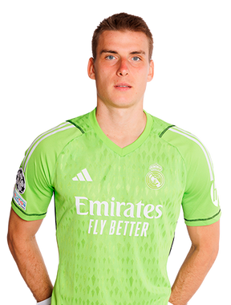
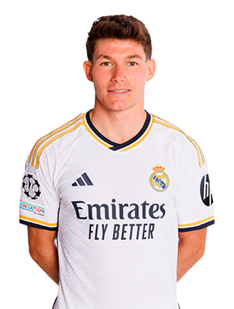
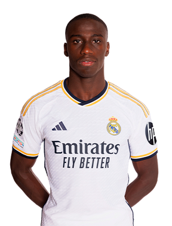
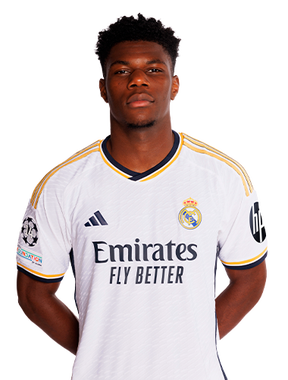

HOME
SQUAD
HONOURS
CLUB
CONTACT
Real Madrid Squad
Goalkeepers
Thibaut Courtois
Goalkeeper

LUNIN
Goalkeeper
KEPA
Goalkeeper
Defenders
Dani Carvajal
Defender
Eder Militao
Defender
David Alaba
Defender
Nacho
Defender
Lucas Vazquez
Defender

Fran Garcia
Defender
Antonio Rudiger
Defender

Ferland Mendy
Defender
Midfielders
Jude Bellingham
Midfielder
Toni Kroos
Midfielder
Luka Modric
Midfielder
Camavinga
Midfielder
Valverde
Midfielder

Tchoumeni
Midfielder
CEBALLOS
Midfielder
Arda Guller
Midfielder
Forwards
Vinicius Jr.
Forward
Rodrygo
Forward
Joselu
Forward
Brahim Díaz
Forward